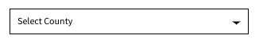
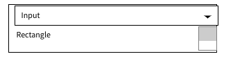
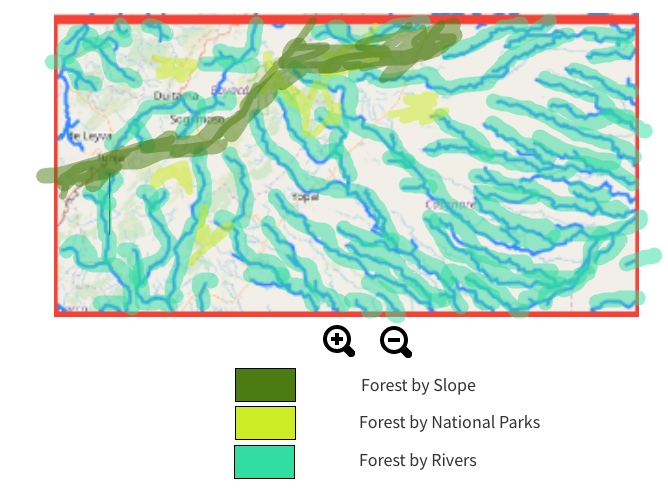

With the help of this app, you will be able to select a county in Colombia, draw the zone you'd like to analyze within the county, and then run the app to show what percentage of land needs to be forested and where it needs to be forested.
Note: The current application only supports the country of Colombia, if you'd like more countries please Venmo me @Alex-White-50
The map shows the country of Colombia with the Counties and Rivers.
The first thing we need to select is the county we are going to analyze.
First select the county and then you will use the next selection to draw a box around the specific area in question in that county.
After you've selected the zone, the app will output something similar to below showing which type of forest needs to be planted in each area.
The App will also output land area with the percentages of land area that need to have trees by forest type.